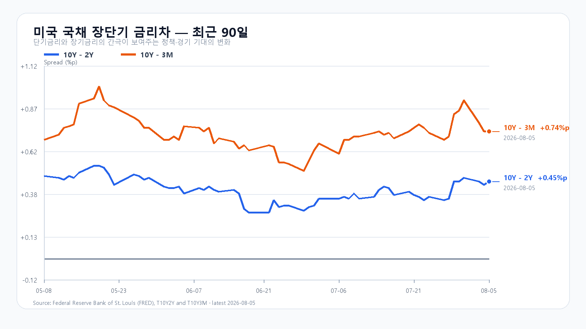
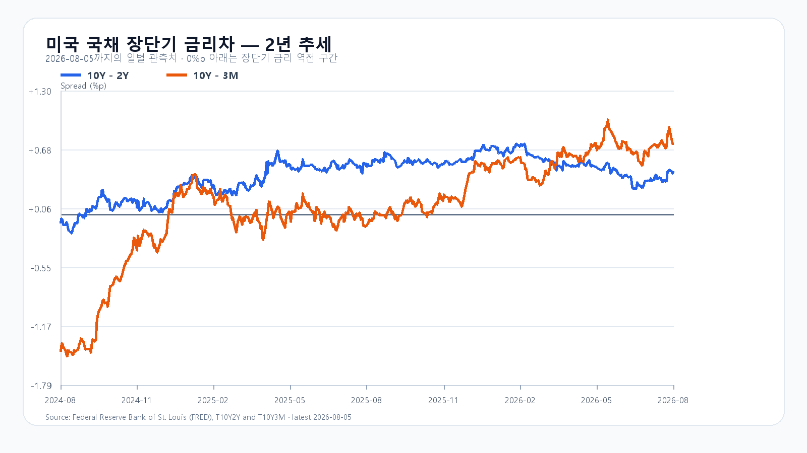

오늘의 한 문장
AI 투자 확대와 메모리 공급 부족은 살아 있습니다. 그러나 오늘 한국 증시는 그 장기 논지보다 외국인 매도와 반도체 내부의 승자 선택을 먼저 가격에 반영하고 있습니다.
전날 반등을 되돌린 외국인·프로그램 매도
KOSPI는 10:05 KST 기준 6,311.56로 -4.35% 움직이며 전날 4.41% 급반등분의 상당 부분을 되돌리고 있습니다. 장 초반부터 흔들린 지수는 6,400선 아래에서 매수와 매도가 맞서고 있습니다.
외국인은 -1조1,129억원, 기관은 +1,043억원, 개인은 +9,812억원을 기록했습니다. 프로그램 전체는 -6,687억원로, 비차익 매도가 지수의 하방 압력을 키웠습니다.
| 항목 | 현재 | 시장 의미 |
|---|---|---|
| KOSPI | 6,311.56 · -4.35% | 전날 급반등분 일부 반납 |
| KOSDAQ | 788.10 · -1.44% | 대형 반도체보다 작은 변동 |
| 삼성전자 | 233,500원 · -5.08% | 대형 반도체 수급 확인 |
| SK하이닉스 | 1,514,000원 · -9.23% | 대형 반도체 수급 확인 |
| KODEX 레버리지 | 92,900원 · -9.59% | KOSPI 변동성 반영 |
| 달러/원 | 1,418.00원 · -0.39% | 외국인 수급의 환율 환경 |
전날에는 위험 선호가 빠르게 복원됐지만, 하루 만에 시장의 관심은 반등의 지속성보다 다시 위험을 줄이는 주체로 옮겨갔습니다. 오늘의 조정은 메모리 수요 전망의 급격한 악화보다 외국인 수급과 프로그램 매도, 미국 반도체주의 종목별 분화가 겹친 결과에 가깝습니다.
KOSPI에서는 하락 455개가 상승 416개보다 많지만 격차는 39개에 그쳤습니다. 지수는 4% 넘게 밀린 데 비해 종목 수의 기울기는 훨씬 완만합니다. 매도가 시장 전체보다 삼성전자·SK하이닉스를 비롯한 초대형 반도체에 더 강하게 집중됐다는 뜻입니다. 원·달러 환율이 안정적이고 6월 경상수지가 497억3,000만달러 흑자를 기록한 점도 이번 하락을 외환 불안보다 주식시장 내부 수급으로 읽게 합니다.
엔비디아만 오른 미국 반도체
밤사이 미국 증시는 전면적인 위험 회피장으로 흐르지 않았습니다. S&P500은 0.2%, 나스닥은 0.8% 내렸지만 다우지수는 0.5% 올랐습니다.
AI와 반도체 안에서는 방향이 선명하게 갈렸습니다. 엔비디아는 3.43% 올랐지만 AMD는 7.04% 급락했습니다. SOXX는 2.12%, QQQ는 0.90%, SMH는 1.04% 하락했고, 마이크론과 브로드컴은 각각 0.06%, 0.03% 상승에 그쳤습니다.
| 자산 | 등락률 | 흐름 |
|---|---|---|
| S&P500 | -0.2% | 소폭 하락 |
| Nasdaq | -0.8% | 기술주 약세 |
| Dow | +0.5% | 상승 |
| Nvidia | +3.43% | 반도체 내 독주 |
| AMD | -7.04% | 급락 |
| SOXX | -2.12% | 반도체 ETF 약세 |
| QQQ | -0.90% | 대형 기술주 약세 |
| SMH | -1.04% | 반도체 ETF 약세 |
분화의 출발점은 SpaceX의 상장 후 첫 분기 보고서였습니다. SpaceX는 AI 지출을 크게 늘리고 Nvidia Vera Rubin을 독점적으로 사용하겠다는 계획을 제시했고, 주가는 13.6% 하락했습니다. 시장은 AI 투자 확대 자체보다 그 비용이 언제 수익으로 돌아오는지, 특정 가속기 선택이 어느 기업의 실적으로 이어지는지를 따지기 시작했습니다.
AI 지출이 늘어도 모든 반도체 종목이 함께 오르는 장세는 약해지고 있습니다. 기술 우위와 고객 관계, 수익성에 따라 주가가 갈리는 국면입니다. 오늘 삼성전자와 SK하이닉스의 약세도 메모리 업황의 장기 방향이 아니라 이런 선택적 매도 환경에서 해석해야 합니다.
강한 서비스 경기와 약한 고용, 높은 물가
미국 7월 ADP 민간고용은 4만4,000명 증가해 6월의 9만5,000명보다 둔화했습니다. 반면 7월 ISM 서비스업지수는 54.1로 확장 국면을 유지했습니다. 기업활동은 59.1, 신규주문은 57.2로 강했지만 고용은 47.4로 위축 영역에 머물렀고 가격지수는 70.3까지 올랐습니다.
경기와 주문은 버티는데 고용은 약하고 물가는 높습니다. 금리 인하 기대만으로 위험자산을 밀어 올리기 어려운 조합입니다.
미국 10년물 금리는 4.61% 부근으로 소폭 낮아졌지만, 8월 5일 기준 10년-2년물 금리차는 0.45%포인트, 10년-3개월물 금리차는 0.74%포인트의 플러스를 유지합니다. 장단기 역전 해소는 경기 침체 우려를 낮추지만, 높은 절대금리는 성장주와 고평가 AI 종목에 계속 부담을 줍니다.


브렌트유는 배럴당 79.45달러 부근입니다. 미국과 이란의 협상 진전 보도는 유가 급등 우려를 낮췄지만 최종 합의에는 이르지 않았습니다. 유가가 안정되더라도 높은 서비스 물가가 곧바로 해소되지는 않습니다.
메모리 공급 부족은 유지
8월 5일 TrendForce 기준 DDR5 16Gb 현물가격은 51.333달러로 보합이었습니다. DDR4 16Gb는 86.683달러로 0.85% 상승했고, DDR4 8Gb는 42.112달러로 보합을 기록했습니다.
| 품목 | 평균가 | 당일 |
|---|---|---|
| DDR5 16Gb | 51.333달러 | 보합 |
| DDR4 16Gb | 86.683달러 | +0.85% |
| DDR4 8Gb | 42.112달러 | 보합 |
2027년까지 이어질 DRAM 수급 타이트 전망도 유지되고 있습니다. Rubin Ultra는 HBM4E와 HBM4 8Hi·12Hi 대안을 평가하고 있습니다. HBM 비트 출하가 50~60% 늘어도 수요가 이를 웃돌 수 있다는 전망이 나옵니다. 9대 CSP의 2026년 설비투자는 약 90% 늘어 8,867억달러를 넘기고, AI 서버 출하는 31% 증가할 것으로 예상됩니다.
따라서 오늘의 약세는 메모리 업황 붕괴보다 단기 수급과 종목 선별의 결과로 보는 편이 타당합니다. AI 데이터센터 투자와 고대역폭 메모리 수요가 업황의 바닥을 받치고 있지만, 주가는 외국인 수급과 달러·금리, AI 공급망에서 초과수익을 확보할 기업까지 함께 가려냅니다.
오늘 밤과 내일의 분기점
오늘 밤 9시 30분에는 미국 신규실업수당 청구와 2분기 생산성·단위노동비용이 발표됩니다. 내일 밤 같은 시각에는 7월 고용보고서가 나옵니다. 고용 둔화가 물가 압력 완화로 이어질지, 고용만 약해진 채 임금과 서비스 물가가 버틸지가 이번 주 위험자산의 방향을 가릅니다.
외국인과 비차익 프로그램 매도가 줄고 미국 고용 지표가 물가 재가속 우려를 키우지 않는다면 전날 급반등분의 일부를 다시 회복할 수 있습니다. 외국인과 프로그램 순매도가 함께 완화되고 지수가 오늘 고점 영역을 되찾는지가 확인 기준입니다.
미국 고용이 적절히 식고 단위노동비용도 안정돼야 합니다. 엔비디아 강세가 AI 투자 지속의 신호로 재해석되고 한국 대형 반도체에 대한 외국인 매도가 멈추면 오늘의 조정은 급반등 뒤 숨 고르기로 끝날 수 있습니다.
고용이 약한데 물가와 단위노동비용은 높게 나오고, 외국인과 비차익 프로그램 매도가 확대되며 KOSPI가 8월 4일 종가 6,358.95를 지키지 못하면 하락 압력이 커집니다.
미국 고용이 예상보다 견조하더라도 임금·비용 압력이 낮아지고 외국인 수급이 순매수로 돌아서면 강세 흐름에 힘이 실립니다. 반대로 외국인 매도가 빠르게 해소되고 프로그램 수급이 순매수로 전환되면 약세 시나리오는 힘을 잃습니다.
오늘 판단은 공격 20점 · 관망 50점 · 방어 30점입니다.
자료 기준
한국 시세와 수급은 Naver Finance의 8월 6일 10:05 KST 장중값을 반영했습니다. 미국 고용은 ADP, 서비스 경기는 ISM, 메모리 현물가는 TrendForce, 미국 국채 금리차는 FRED 자료를 사용했습니다.